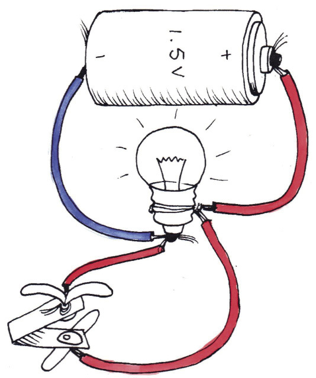
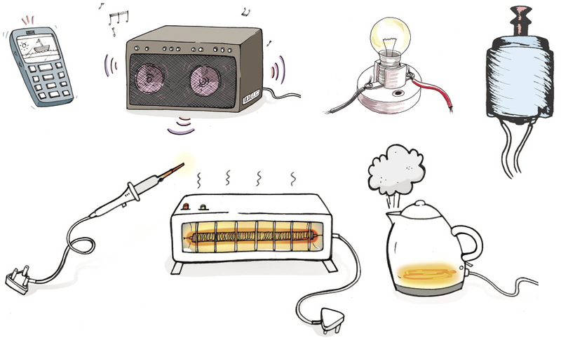
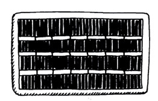

<div class="container">
  <div id="contents" class="col-md-12 main-content"><h1 xmlns="http://www.w3.org/1999/xhtml" id="toc-id-0">Elektriese stelsels en beheer</h1>


  <div xmlns="http://www.w3.org/1999/xhtml" class="Basic-Text-Frame">
    <p class="x--Body-opener">In hierdie hoofstuk gaan jy uitvind hoe om elektriese stroombane te bou wat gloeilampe laat skyn. Jy
gaan van die volgende leer: stroombaan komponente, inset- en uitsettoestelle, en beheertoestelle
soos skakelaars. Jy gaan ook leer hoe om hierdie komponente as simbole op stroombaandiagramme
te teken.
</p>

  
    <figure> 

    <figcaption>Figuur 1</figcaption></figure><figure> 
    </figure></div>
    <h2 xmlns="http://www.w3.org/1999/xhtml" id="toc-id-1">Ondersoek eenvoudige stroombane</h2>

    <h3 xmlns="http://www.w3.org/1999/xhtml">Laat gloeilampe skyn</h3>

    <p xmlns="http://www.w3.org/1999/xhtml" class="x--Body-Text para-style-override-3"><b>Om hierdie aktiwiteit te doen, benodig jy al die komponente (dele) wat in figuur
2 gewys word.
</b></p>

    <figure xmlns="http://www.w3.org/1999/xhtml"> 
    <figcaption>Figuur 2: Komponente om ’n elektriese stroombaan te bou
</figcaption></figure><p xmlns="http://www.w3.org/1999/xhtml" class="x--Body-indent">Verdeel in spanne van vier tot ses leerders. Twee spanne kan saam werk indien
daar slegs een sel per span is. Bespreek die volgende in julle span en doen dan die
eksperimente:
</p>

    <ul xmlns="http://www.w3.org/1999/xhtml"><li class="x--Body-text-bullet">Vind uit hoe om die komponente te verbind sodat die gloeilamp skyn. Vind nog
drie ander maniere om die gloeilamp te laat skyn.
</li>

      <li class="x--Body-text-bullet">Raak liggies aan die gloeilamp. Wat voel jy?
</li>

      <li class="x--Body-text-bullet">Kyk na die binnekant van die glasgedeelte van die gloeilamp. Watter deel van
die gloeilamp word warm?
</li>

      <li class="x--Body-text-bullet">Wat gebeur wanneer jy twee selle in plaas van een sel koppel?
</li>

      <li class="x--Body-text-bullet">Hoe kan jy die gloeilamp aan- en afskakel?
</li>
    </ul><p xmlns="http://www.w3.org/1999/xhtml" class="x--Body-indent">Uit hierdie aktiwiteit het jy agtergekom dat die gloeilamp slegs sal skyn wanneer
die drade aan die skroefkontak en die soldeerknop van die gloeilamp raak.
</p>

    <p xmlns="http://www.w3.org/1999/xhtml" class="x--Body-indent">Jy het ook geleer dat jy die metaaldele aanmekaar moet koppel om ’n baan vir
die stroom te maak wat deur die puntgedeelte van die sel, deur die gloeilamp,
en terug na die plat gedeelte van die sel loop. Hierdie baan word ’n stroombaan
genoem. Die stroom sal nie vloei as daar ’n gaping in die baan van die geleiers is
nie.
</p>

    <div xmlns="http://www.w3.org/1999/xhtml" class="note">
      <p>’n Elektriese stroombaan is ’n volledige baan
van geleiers. Die selle veroorsaak dat ’n stroom
elektrisiteit deur die stroombaan vloei. Die
stroom sal slegs vloei as daar geen gapings in die
stroombaan is nie.
</p>
</div>

    <p xmlns="http://www.w3.org/1999/xhtml" class="x--Body-indent">Die selle verskaf energie om die elektrisiteit deur die stroombaan te laat vloei, en
die elektrisiteit wat deur die “filamentdraad” binne die gloeilamp gloei, veroorsaak
dat die gloeilamp skyn.
</p>

    <p xmlns="http://www.w3.org/1999/xhtml" class="x--Body-indent">Selle gebruik chemiese reaksies om elektrisiteit deur ’n stroombaan te laat vloei.
In hoofstuk 9 gaan jy meer oor die chemiese reaksies in selle leer.
</p>

    <h4 xmlns="http://www.w3.org/1999/xhtml">Die stroomspanning van ’n sel
</h4>

    <p xmlns="http://www.w3.org/1999/xhtml" class="x--Body-Text">Daar is ’n nommer op die selle gedruk, byvoorbeeld “1,5 V”. Soek daardie nommer
op jou sel. Die nommer stel 1,5 volt voor. Jy kan sê dat die sel ’n <i>stroomspanning</i> van
1,5 volt het.
</p>

    <p xmlns="http://www.w3.org/1999/xhtml" class="x--Body-indent-1-3">Toe jy twee selle punt-tot-punt gekoppel het, het jy ’n twee-sel <b>battery</b> met ’n stroomspanning van 3 volt gemaak. Die 3 volt battery kan meer energie aan die gloeilamp gee en die gloeilamp sal dus helderder skyn.
 </p>

    <div xmlns="http://www.w3.org/1999/xhtml" class="aside">
      <p class="x--Body-box-no-indent">Wanneer twee of meer selle gekoppel word om ’n elektriese stroom aan ’n stroombaan te verskaf, noem jy dit ’n <b>battery
van selle,</b> of gewoonweg, <b>’n
battery</b>. ’n Enkel sel kan ook ’n battery genoem word.
</p>
    </div>

    <h3 xmlns="http://www.w3.org/1999/xhtml">Koppel gloeilampe in serie</h3>

    <p xmlns="http://www.w3.org/1999/xhtml" class="x--Body-Text para-style-override-3"><b>Vir hierdie aktiwiteit het jy die volgende nodig:
</b></p>

    <ul xmlns="http://www.w3.org/1999/xhtml"><li class="x--Body-text-bullet">’n 3-sel battery in serie gekoppel in ’n <b>sel houer</b>
(die selle moet redelik nuut wees),</li>

      <li class="x--Body-text-bullet">drie gloeilampe in gloeilamphouers,
</li>

      <li class="x--Body-text-bullet">geleierdrade,
</li>

      <li class="x--Body-text-bullet">’n <b>drukskakelaar</b>, en
</li>

      <li class="x--Body-text-bullet">Jy kan ’n drukskakelaar maak deur ’n stuk rigiede
plastiek en twee metaal papierskuiwers te gebruik.
’n Drukskakelaar maak slegs elektriese kontak
wanneer jy dit druk.

        <div class="aside">
          <p class="x--Body-box-no-indent">Jy kan ’n eenvoudige <b>sel
houer</b> maak deur drie selle in
’n vel A4-papier toe te draai.
Gebruik kleefband rondom
die papier in plek te hou om
die batterye se punte. Druk
die geleierdrade onder die
kleefband in sodat dit aan die
battery terminale kan raak.
</p>
        </div> 
      </li>
      <li>   ’n klein stukkie papier waarop die woorde “kontrole-lig” geskryf staan.
      </li>
    </ul><figure xmlns="http://www.w3.org/1999/xhtml"> 

    <figcaption>Figuur 3</figcaption></figure><div xmlns="http://www.w3.org/1999/xhtml" class="aside">
      <p class="x--Body-box-no-indent">Jy kan ’n drukskakelaar maak
deur ’n stuk rigiede plastiek en
twee metaal papierskuiwers
te gebruik. ’n Drukskakelaar
maak slegs elektriese kontak
wanneer jy dit druk.
</p>
    </div>

    <p xmlns="http://www.w3.org/1999/xhtml" class="x--Body-indent">Bou die stroombaan wat in figuur 3 gewys word. Druk die skakelaar sodat die
gloeilamp kan skyn en kyk hoe helder die gloeilamp skyn. Die eerste gloeilamp
gaan jou <i>kontrole-lig</i> wees.
</p>

    <div xmlns="http://www.w3.org/1999/xhtml" class="note">
      <p>Indien die kontrole-lig helder skyn, is die <i>stroom
sterk</i>.
</p>
<p>Indien die kontrole-lig flou is, is die <i>stroom swak</i>.
</p>
</div>

    <p xmlns="http://www.w3.org/1999/xhtml" class="x--Body-indent">Koppel nou nog ’n gloeilamp in die stroombaan soos in figuur 4 gewys word.
</p>

    <figure xmlns="http://www.w3.org/1999/xhtml"> 

    <figcaption>Figuur 4</figcaption></figure><p xmlns="http://www.w3.org/1999/xhtml" class="x--Body-indent">Bedek die nuwe gloeilamp met jou hand en kyk slegs na die kontrole-lig. Die
kontrole-lig is nie so helder as wat dit voorheen was nie. Wat weet jy omtrent die
stroom wat deur die twee gloeilampe moet vloei?
</p>

    <p xmlns="http://www.w3.org/1999/xhtml" class="x--Body-indent">Koppel nou ’n derde gloeilamp in die stroombaan soos in figuur 5.
</p>

    <figure xmlns="http://www.w3.org/1999/xhtml"> 

    <figcaption>Figuur 5</figcaption></figure><p xmlns="http://www.w3.org/1999/xhtml" class="x--Body-indent">Bedek albei nuwe gloeilampe met jou hand en kyk na die kontrole-lig. Hoe het
die stroom nou verander?
</p>

    <h4 xmlns="http://www.w3.org/1999/xhtml">Serie skakeling
</h4>

    <p xmlns="http://www.w3.org/1999/xhtml" class="x--Body-Text">Wanneer ons gloeilampe koppel wat net een baan toelaat vir die stroom om te
vloei soos in figuur 5, sê ons dat die gloeilampe “in serie” gekoppel is. Die stroom
moet om die beurt deur elke gloeilamp vloei.
</p>

    <p xmlns="http://www.w3.org/1999/xhtml" class="x--Body-investigation-hanging">1. Wat sal gebeur indien jy ’n vierde gloeilamp koppel?
</p>
    <hr xmlns="http://www.w3.org/1999/xhtml"/><p xmlns="http://www.w3.org/1999/xhtml" class="x--Body-investigation-hanging">2. Indien ons meer gloeilampe in serie in die stroombaan koppel, sal die kontrole-
lig flouer skyn. Dit sê aan ons dat indien ons meer ................
byvoeg, sal
die stroom ................
word.
</p><hr xmlns="http://www.w3.org/1999/xhtml"/><h4 xmlns="http://www.w3.org/1999/xhtml">Weerstand
</h4>

    <p xmlns="http://www.w3.org/1999/xhtml" class="x--Body-Text">Dieselfde battery kan ’n sterk en ’n swak stroom voortbring; die stroom word deur
die weerstand bepaal.
</p>

    <p xmlns="http://www.w3.org/1999/xhtml" class="x--Body-indent">Namate ons meer gloeilampe in serie koppel, is dit moeiliker vir die battery om
die stroom deur die stroombaan te stuur, en die stroom word dus al hoe swakker
en swakker. Die rede hiervoor is die weerstand in elke gloeilamp se filamentdraad.
Die gloeilampe het weerstand en daarom sê ons dat hulle “resistors” is.
</p>

    <div xmlns="http://www.w3.org/1999/xhtml" class="note">
      <p>Hoe groter die weerstand, hoe swakker die stroom.
</p>
<ul><li class="x--Body-text-bullet">Goeie geleiers het ’n lae weerstand, swak geleiers
het ’n hoë weerstand. Voorbeelde van goeie
geleiers is koper, goud, silwer en aluminium.
Hulle het almal ’n lae weerstand.
</li>

        <li class="x--Body-text-bullet">Voorbeelde van medium of swak geleiers
is wolframgloeidraad, grafiet (die swart
samestelling wat binne jou potlood is) en
<b>nichroom</b>. Hulle gelei wel elektrisiteit, maar nie
baie goed nie. Die filamentdraad in ’n gloeilamp
word van wolframgloeidraad gemaak.
</li>

        <li class="x--Body-text-bullet">Voorbeelde van baie swak geleiers is plastiek,
glas en hout. Hulle het so ’n hoë weerstand dat ’n
battery nie stroom deur hulle kan laat vloei nie.
Die plastiek wat elektriese draad bedek, is die
isolator vir die draad.
</li>
      </ul></div>

    <div xmlns="http://www.w3.org/1999/xhtml" class="aside">
      <p class="x--Body-box-no-indent"><b>Nichroom</b> is ’n allooi (mengsel
van nikkel en chroom). Dit
word gereeld in elektriese
toestelle gebruik as ’n
verhittingselement met ’n baie
hoë weerstand.
</p>
    </div>

    <h2 xmlns="http://www.w3.org/1999/xhtml" id="toc-id-2">Parallelle verbindings: twee, drie of meer bane vir stroom</h2>

    <p xmlns="http://www.w3.org/1999/xhtml" class="x--Body-Text">Figuur 4 wys twee gloeilampe wat in serie gekoppel is sodat die gloeilampe skyn.
Koppel hulle weer en probeer om te onthou hoe skerp hulle geskyn het.
</p>

    <p xmlns="http://www.w3.org/1999/xhtml" class="x--Body-indent">Koppel nou twee gloeilampe op ’n ander manier soos in figuur 6 hieronder.
</p>

   <figure xmlns="http://www.w3.org/1999/xhtml"> 

    <figcaption>Figuur 6</figcaption></figure><p xmlns="http://www.w3.org/1999/xhtml" class="x--Body-indent">Albei gloeilampe skyn wanneer jy die skakelaar druk, maar hulle brand nou
helderder as wat hulle gebrand het toe hulle soos in figuur 4 gekoppel was.
</p>

    <p xmlns="http://www.w3.org/1999/xhtml" class="x--Body-indent">Al die stroom wat deur die sel verskaf word vloei deur die rooi draad. Maar die
stroom word tussen die twee blou drade gesplit.</p>

    <div xmlns="http://www.w3.org/1999/xhtml" class="note">
      <p> Wanneer resistors in ’n stroombaan gekoppel is
sodat die stroom tussen die resistors verdeel is, sê
jy dat die resistors in “parallel” gekoppel is.

</p></div>

    <h3 xmlns="http://www.w3.org/1999/xhtml">Koppel drie resistors in parallel</h3>

    <p xmlns="http://www.w3.org/1999/xhtml" class="x--Body-Text para-style-override-3"><b>Vir hierdie aktiwiteit het jy die volgende nodig:
</b></p>

    <ul xmlns="http://www.w3.org/1999/xhtml"><li class="x--Body-text-bullet">’n battery gemaak van 3 goeie selle,
</li>

      <li class="x--Body-text-bullet">4 gloeilampe in gloeilamphouers,
</li>

      <li class="x--Body-text-bullet">’n drukskakelaar, en
</li>

      <li class="x--Body-text-bullet">8 geleierdrade.
</li>
    </ul><p xmlns="http://www.w3.org/1999/xhtml" class="x--Body-Text">Kyk na die stroombaan in figuur 7.
</p>

     <figure xmlns="http://www.w3.org/1999/xhtml"> 

   <figcaption>Figuur 7</figcaption></figure><p xmlns="http://www.w3.org/1999/xhtml" class="x--Body-investigation-hanging">1. Hoeveel bane vir die stroom kan jy sien? Volg die bane vir ’n stroom vanaf die
positiewe terminaal van die battery, deur die gloeilampe, tot by die negatiewe
terminaal van die battery.
</p>
    <hr xmlns="http://www.w3.org/1999/xhtml"/><p xmlns="http://www.w3.org/1999/xhtml" class="x--Body-investigation-hanging">2. Sal die kontrole-lig net so helder, of helderder of flouer skyn as in figuur 6?
</p>
    <hr xmlns="http://www.w3.org/1999/xhtml"/><p xmlns="http://www.w3.org/1999/xhtml" class="x--Body-investigation-hanging">3. Toets jou idee. Bou die stroombaan in figuur 6 en voeg dan ’n gloeilamp by soos
in figuur 7.
</p>

    <p xmlns="http://www.w3.org/1999/xhtml" class="x--Body-investigation-hanging">4. Was jou idee korrek?
</p>
    <hr xmlns="http://www.w3.org/1999/xhtml"/><p xmlns="http://www.w3.org/1999/xhtml" class="x--Body-indent">Wanneer jy die gloeilampe koppel sodat die stroom twee of meer bane het om
deur te vloei, koppel jy die gloeilampe in parallel.
</p>

    <p xmlns="http://www.w3.org/1999/xhtml" class="x--Body-indent">Indien jy meer parallelle bane vir jou stroom bou, kan die battery meer stroom
uitgee?
</p>

    <p xmlns="http://www.w3.org/1999/xhtml" class="x--Body-indent">’n Mens kan dus ook sê dat wanneer jy meer bane in parallel by jou stroombaan
oeg, die weerstand in die stroombaan sal verminder word.
</p>

    <h4 xmlns="http://www.w3.org/1999/xhtml">Kortsluitings
</h4>

    <p xmlns="http://www.w3.org/1999/xhtml" class="x--Body-Text">Kyk na die stroombaan in figuur 8. Iemand het ’n fout gemaak en die oranje draad
van die terminaal aan die skakelaar gekoppel.
</p>

     <figure xmlns="http://www.w3.org/1999/xhtml"> 

   <figcaption>Figuur 8</figcaption></figure><p xmlns="http://www.w3.org/1999/xhtml" class="x--Body-indent">Soek die oranje draad – is daar ’n gloeilamp aan gekoppel?
</p>

    <p xmlns="http://www.w3.org/1999/xhtml" class="x--Body-indent">Hierdie draad is ’n zero-weerstandbaan vir stroom. Indien jy die skakelaar druk,
sal die battery soveel stroom uitgee as wat dit kan. Die battery sal dit doen omdat
dit ’n zero-weerstandbaan gevind het.
</p>

    <p xmlns="http://www.w3.org/1999/xhtml" class="x--Body-indent">Omtrent al die stroom wat deur die battery verskaf word, sal deur die oranje
draad vloei, en slegs ’n swak stroom sal deur die gloeilamp vloei.
</p>

    <p xmlns="http://www.w3.org/1999/xhtml" class="x--Body-indent">Die battery sal sy energie so vinnig as moontlik uitgee. Daarom sal dit warm
word en sal dit binne 10 minute “dood” of “pap” wees.
</p>

    <p xmlns="http://www.w3.org/1999/xhtml" class="x--Body-indent-1-3">Die persoon se fout was om ’n parallelle baan met die draad vir die stroom te maak. Hierdie baan noem ons ’n <b>kortsluiting</b>.
</p>

    <div xmlns="http://www.w3.org/1999/xhtml" class="aside">
      <p class="x--Body-box-no-indent">’n <b>Kortsluiting</b> is ’n parallelle baan vir stroom wat amper
zero-weerstand het.
</p>
    </div>

    <p xmlns="http://www.w3.org/1999/xhtml" class="x--Body-investigation-hanging">5. Hoekom skyn die gloeilamp nie wanneer jy ’n kortsluitingbaan maak?
</p>
    <hr xmlns="http://www.w3.org/1999/xhtml"/><p xmlns="http://www.w3.org/1999/xhtml" class="x--Body-investigation-hanging">6. Wat gebeur met die draad wat die kortsluiting veroorsaak? Hoekom?
</p>
    <hr xmlns="http://www.w3.org/1999/xhtml"/><p xmlns="http://www.w3.org/1999/xhtml" class="x--Body-investigation-hanging">7. Kyk na figuur 9. Die gloeilamp skyn, maar wanneer jy die skakelaar druk hou
die gloeilamp op met skyn. Verduidelik die probleem en teken ’n diagram op
die volgende bladsy om te wys hoe jy die stroombaan korrek moet koppel. Die
gloeilamp moet skyn slegs wanneer jy die skakelaar druk.
</p>
    <hr xmlns="http://www.w3.org/1999/xhtml"/><figure xmlns="http://www.w3.org/1999/xhtml"> 

    <figcaption>Figuur 9</figcaption></figure><h4 xmlns="http://www.w3.org/1999/xhtml">Waarom kortsluitings gevaarlik is
</h4>

    <p xmlns="http://www.w3.org/1999/xhtml" class="x--Body-Text">ESKOM verskaf energie teen 230 volt, wat ’n verwarmer rooiwarm kan maak. Dit is
veilig in ’n verwarmer aangesien slegs die resistor in die verwarmer warm word en
nie die drade van die kragprop nie. Maar indien die isolasie op die drade gebreek
is, kan die drade aanmekaar raak en ’n kortsluiting veroorsaak. Die stroom sal nie
deur die verwarmer vloei nie, maar eerder ’n ander baan deur die drade vind. Die
drade word dan rooiwarm en kan ’n brand veroorsaak.
</p>

    <p xmlns="http://www.w3.org/1999/xhtml" class="x--Body-indent">Alle elektriese toestelle moet presies gebruik word soos wat dit deur die
vervaardiger voorgestel word. Moet nooit probeer om ’n gebreekte elektriese
toestel reg te maak sonder ekspert hulp nie. Maak altyd seker dat die toestel
afgeskakel of selfs uitgeprop is wanneer jy dit nie gebruik nie.
</p>

    <h2 xmlns="http://www.w3.org/1999/xhtml" id="toc-id-3">Inset-, uitset- en beheertoestelle in ’n stroombaan</h2>

    <p xmlns="http://www.w3.org/1999/xhtml" class="x--Body-Text">n Elektriese stroombaan gebruik ’n inset van elektriese energie om ’n uitset van
een of ander tipe energie te verskaf. Voorbeelde word hieronder beskryf:
</p>

    <ul xmlns="http://www.w3.org/1999/xhtml"><li class="x--Body-text-bullet">’n Gloeilamp gebruik die inset van elektriese energie wat deur ’n battery verskaf
word om ’n <i>uitset</i> van lig te gee. Jy kan sê dat die gloeilamp elektriese energie
<i>omskakel</i> na ligenergie.
</li>

      <li class="x--Body-text-bullet">   Die weerstandsdraad of element in ’n ketel, gee ’n uitset van hitte-energie.
</li>

      <li class="x--Body-text-bullet">Die luidspreker van ’n radio verskaf ’n <i>uitset</i> van klankenergie.
</li>

      <li class="x--Body-text-bullet">’n Elektriese motor gee ’n <i>uitset</i> van beweging of kinetiese energie.
</li>
    </ul><p xmlns="http://www.w3.org/1999/xhtml" class="x--Body-indent">Ons kan ’n stelseldiagram gebruik om ’n elektriese stroombaan te beskryf:
</p>

    <div xmlns="http://www.w3.org/1999/xhtml" class="Basic-Text-Frame frame-27">
      <p class="x--Body-Text">energie inset
 <span class="char-style-override-8">➱</span> beheertoestel
 <span class="char-style-override-8">➱</span> energie uitset
</p>
    </div>
<figure xmlns="http://www.w3.org/1999/xhtml">
    
    <figcaption>Figuur 10: Insettoestelle
</figcaption></figure><figure xmlns="http://www.w3.org/1999/xhtml"> 

    <figcaption>Figuur 11: Uitsettoestelle
</figcaption></figure><p xmlns="http://www.w3.org/1999/xhtml" class="x--Body-indent">Gloeilampe, verwarmers en ander uitsettoestelle, het weerstand. Dit beteken
dat die elektrisiteit energie verloor soos wat dit deur die toestel beweeg, en hierdie
energie word aan die toestel oorgedra. Die gloeilamp is dus ’n resistor, en ’n
verwarmer se element is ook ’n resistor.
</p>

    <div xmlns="http://www.w3.org/1999/xhtml" class="note">
      <p>Uitsettoestelle het weerstand.
 </p></div>

    <h4 xmlns="http://www.w3.org/1999/xhtml" class="x--Head-C para-style-override-5">Beheertoestelle
</h4>

    <p xmlns="http://www.w3.org/1999/xhtml" class="x--Body-Text">Ons wil stroombane aan- en afskakel, beheer hoeveel energie uitset ons van
’n stroombaan kry, of ons wil die hoeveelheid stroom in sekere dele van ’n
stroombaan beheer. Ons kan dit doen deur gebruik te maak van beheertoestelle.
Voorbeelde van beheertoestelle is skakelaars, domperskakelaars en resistors.</p>

    <p xmlns="http://www.w3.org/1999/xhtml" class="x--Body-indent">Jy het al ’n ligskakelaar teen die muur van ’n kamer gesien. Daardie tipe
skakelaar word ’n “wiegskakelaar” genoem. ’n “Drukskakelaar” word gebruik vir
deurklokkies; dit voltooi die stroombaan slegs wanneer jy die skakelaar druk. ’n
“Glyskakelaar” word gebruik vir tafellampe.
</p>

    <p xmlns="http://www.w3.org/1999/xhtml" class="x--Body-indent-1-3">’n “Domper-skakelaar” gee jou beheer oor die helderheid van die ligte in ’n kamer. ’n Domper-skakelaar gebruik ’n resistor wat jou toelaat om die stroom te beheer deur die knoppie te draai. Dit word ’n <b>veranderlike</b> resistor genoem.
</p>

    <div xmlns="http://www.w3.org/1999/xhtml" class="aside"> <p class="x--Body-box-no-indent">Om te “varieer” beteken om te verander, daarom word die skakelaar ’n <b>veranderlike</b> resistor genoem. </p>
    </div>

    <p xmlns="http://www.w3.org/1999/xhtml" class="x--Body-indent">Sommige resistors is nie veranderlik nie en het vaste (onveranderlike)
weerstand. Wanneer jy ’n stroombaan ontwerp kan jy ’n resistor kies wat die regte
hoeveelheid weerstand bied om die stroom in ’n sekere deel van die stroombaan
te beheer.
</p>

    <p xmlns="http://www.w3.org/1999/xhtml" class="x--Body-indent">In graad 9 sal jy meer leer oor verskillende tipes beheertoestelle.
</p>

    <figure xmlns="http://www.w3.org/1999/xhtml"> 

    <figcaption>Figuur 12: Beheertoestelle
</figcaption></figure><h3 xmlns="http://www.w3.org/1999/xhtml">Ontwerp en maak ’n skakelaar; verskillende tipes skakelaars</h3>

    <p xmlns="http://www.w3.org/1999/xhtml" class="x--Body-Text">’n Skakelaar het ’n gaping waar die geleiers nie kontak maak nie.
</p>

    <ul xmlns="http://www.w3.org/1999/xhtml"><li class="x--Body-text-bullet">Wanneer jy die skakelaar druk, voltooi jy die stroombaan en kan die stroom deurvloei. Jy het die skakelaar <b>toegemaak</b>.
</li>

      <li class="x--Body-text-bullet">Wanneer jy die skakelaar beweeg om die stroombaan te breek, het jy die skakelaar <b>oopgemaak</b>.
</li>
    </ul><div xmlns="http://www.w3.org/1999/xhtml" class="aside">
          <p class="x--Body-box-no-indent">Om ’n stroombaan aan te skakel, moet jy die skakelaar <b>toemaak</b>. Om ’n stroombaan af te skakel, moet jy die skakelaar <b>oopmaak</b>. </p>
        </div>
    
    <p xmlns="http://www.w3.org/1999/xhtml" class="x--Body--above"><b>Vir hierdie aktiwiteit het jy die volgende nodig:
</b></p>
    
    

    <ul xmlns="http://www.w3.org/1999/xhtml"><li class="x--Body-text-bullet">’n stroombaan met ’n battery,
</li>

      <li class="x--Body-text-bullet">’n uitsettoestel soos ’n gloeilamp, gonser of motor, en
</li>

      <li class="x--Body-text-bullet">die materiale en gereedskap wat jy nodig het om die skakelaar te maak.
</li>
    </ul><p xmlns="http://www.w3.org/1999/xhtml" class="x--Body-investigation-hanging">1. Ontwerp en maak jou skakelaar.
</p>

    <p xmlns="http://www.w3.org/1999/xhtml" class="x--Body-investigation-hanging">2. Toets jou skakelaar.
</p>

    <p xmlns="http://www.w3.org/1999/xhtml" class="x--Body-indent">Verskillende skakelaars kan op verskillende maniere werk; die skakelaar kan
byvoorbeeld:
</p>

    <ul xmlns="http://www.w3.org/1999/xhtml"><li class="x--Body-text-bullet para-style-override-12">toemaak slegs wanneer jy dit druk,
</li>

      <li class="x--Body-text-bullet para-style-override-12">toemaak en toe bly selfs nadat jy jou hand weggeneem het,
</li>

      <li class="x--Body-text-bullet para-style-override-12">toemaak wanneer iemand ’n swaar voorwerp oplig,
</li>

      <li class="x--Body-text-bullet para-style-override-12">toemaak wanneer iemand ’n deur oopmaak, of
</li>

      <li class="x--Body-text-bullet para-style-override-12">toemaak na ’n sekere aantal minute.
</li>
    </ul><p xmlns="http://www.w3.org/1999/xhtml" class="x--Body-investigation-hanging">3. Kyk na die idees vir skakelaars in figuur 13. Verduidelik hoe elkeen sal werk.
</p>

    <p xmlns="http://www.w3.org/1999/xhtml" class="x--Body-investigation-hanging-a-">(a) Skakelaar A:</p>
    <hr xmlns="http://www.w3.org/1999/xhtml"/><p xmlns="http://www.w3.org/1999/xhtml" class="x--Body-investigation-hanging-a-">(b) Skakelaar B:</p>
    <hr xmlns="http://www.w3.org/1999/xhtml"/><p xmlns="http://www.w3.org/1999/xhtml" class="x--Body-investigation-hanging-a-">(c) Skakelaar C:</p>
    <hr xmlns="http://www.w3.org/1999/xhtml"/><p xmlns="http://www.w3.org/1999/xhtml" class="x--Body-investigation-hanging-a-">(d) Skakelaar D:</p>
    <hr xmlns="http://www.w3.org/1999/xhtml"/><p xmlns="http://www.w3.org/1999/xhtml" class="x--Body-investigation-hanging-a-">(e) Skakelaar E:</p>
    <hr xmlns="http://www.w3.org/1999/xhtml"/><figure xmlns="http://www.w3.org/1999/xhtml"> 

    <figcaption>Figuur 13: Meer idees vir die maak van skakelaars
</figcaption></figure><h3 xmlns="http://www.w3.org/1999/xhtml">Die simbole wat gebruik word om stroombaandiagramme te teken</h3>

    <p xmlns="http://www.w3.org/1999/xhtml" class="x--Body-Text">Nadat jy met regte elektriese stroombane gewerk het, kan jy begin om hulle te
teken deur van simbole gebruik te maak, eerder as wat jy die stroombaan teken
soos wat hy werklik lyk. Ingenieurs, wetenskaplikes en tegnici gebruik meestal
simbole en diagramme.
</p>

    <p xmlns="http://www.w3.org/1999/xhtml" class="x--Body-indent para-style-override-14">’n Lys van simbole vir verskillende elektriese komponente, word op die volgende
twee bladsye gegee. In graad 9 gaan jy die simbole van nog meer komponente leer.
</p>

    <table xmlns="http://www.w3.org/1999/xhtml" id="table-7" class="No-Table-Style"><tbody><tr class="Row-Column-36"><td class="cell-style-override-4">
            <p class="x--Body-Text para-style-override-3"><b>Foto van die
komponent
</b></p>
          </td>

          <td class="cell-style-override-4">
            <p class="x--Body-Text para-style-override-3"><b>Simbool vir die
komponent
 </b></p>
          </td>

          <td class="cell-style-override-4">
            <p class="x--Body-Text para-style-override-3"><b>Naam van die komponent
</b></p>
          </td>
        </tr><tr class="Row-Column-36"><td class="cell-style-override-4" colspan="3">
            <p class="x--Body-Text para-style-override-3"><b>’n Enkelsel: Hierdie selle
verskaf gewoonlik 1,5 volt.
</b></p>
          </td>
        </tr><tr class="Row-Column-39"><td class="cell-style-override-4">
            <p class="x--Body-Text para-style-override-11">
            <span></span> </p>
          </td>

          <td class="cell-style-override-4">
            <p class="x--Body-Text para-style-override-11">
            <span></span> </p>
          </td>

          <td class="cell-style-override-4">
            <p class="x--Body-Text">’n Enkelsel: Hierdie selle
verskaf gewoonlik 1,5 volt.

</p>
          </td>
        </tr><tr class="Row-Column-42"><td class="cell-style-override-4">
            <p class="x--Body-Text para-style-override-11">
            <span></span> </p>
          </td>

          <td class="cell-style-override-4">
            <p class="x--Body-Text para-style-override-11">
            <span></span> </p>
          </td>

          <td class="cell-style-override-4">
            <p class="x--Body-Text">’n Battery van drie selle in
serie wat gewoonlik 4,5 volt
verskaf.
</p>
          </td>
        </tr><tr class="Row-Column-45"><td class="cell-style-override-4">
            <p class="x--Body-Text para-style-override-11">
            <span></span> </p>
          </td>

          <td class="cell-style-override-4">
            <p class="x--Body-Text para-style-override-11">
            <span></span> </p>
          </td>

          <td class="cell-style-override-4">
            <p class="x--Body-Text">’n Generator skakel
wisselbeweging om na
elektrisiteit deur ’n magneet
en opgerolde koperdraad te
gebruik.
</p>
          </td>
        </tr><tr class="Row-Column-48"><td class="cell-style-override-4">
            <p class="x--Body-Text para-style-override-11">
            <span></span> </p>
          </td>

          <td class="cell-style-override-4">
            <p class="x--Body-Text para-style-override-11">
            <span></span> </p>
          </td>

          <td class="cell-style-override-4">
            <p class="x--Body-Text">’n Fotovoltaïese sel:
Hierdie insettoestel
skakel ligenergie om na
elektrisiteit.
</p>
          </td>
        </tr><tr class="Row-Column-51"><td class="cell-style-override-4">
            <p class="x--Body-Text para-style-override-11">
            <span></span> </p>
          </td>

          <td class="cell-style-override-4">
            <p class="x--Body-Text para-style-override-11">
            <span></span> </p>
          </td>

          <td class="cell-style-override-4">
            <p class="x--Body-Text">Enige goeie geleier:
Gewoonlik ’n stuk draad of
koperstrook, maar ’n vurk
of muntstuk sal ook goeie
geleiers wees.</p>
          </td>
        </tr></tbody></table><table xmlns="http://www.w3.org/1999/xhtml" id="table-8" class="No-Table-Style"><tbody><tr class="Row-Column-36"><td class="cell-style-override-4" colspan="3">
            <p class="x--Body-Text para-style-override-3"><b>Beheertoestelle
</b></p>
          </td>
        </tr><tr class="Row-Column-57"><td class="cell-style-override-4">
            <p class="x--Body-Text para-style-override-11">
            <span></span> </p>
          </td>

          <td class="cell-style-override-4">
            <p class="x--Body-Text para-style-override-11">
            <span></span> </p>
          </td>

          <td class="cell-style-override-4">
            <p class="x--Body-Text">’n skakelaar
</p>
          </td>
        </tr><tr class="Row-Column-61"><td class="cell-style-override-4">
            <p class="x--Body-Text para-style-override-11">
            <span></span> </p>

            <p class="x--Body-Text para-style-override-11">
            <span></span> </p>
          </td>

          <td class="cell-style-override-4">
            <p class="x--Body-Text para-style-override-11">
            <span></span> </p>
          </td>

          <td class="cell-style-override-4">
            <p class="x--Body-Text">’n Resistor: Dit kan van nichroom-
draad gemaak word wat ’n swak
geleier is, of van grafiet soos in ’n
"koolstof-resistor".
</p>
          </td>
        </tr><tr class="Row-Column-64"><td class="cell-style-override-4">
            <p class="x--Body-Text para-style-override-11">
            <span></span> </p>
          </td>

          <td class="cell-style-override-4">
            <p class="x--Body-Text para-style-override-11">
            <span></span> </p>
          </td>

          <td class="cell-style-override-4">
            <p class="x--Body-Text">’n Veranderlike resistor: Domper-
skakelaars is veranderlike resistors.
Die foto wat die onderkant van ’n
veranderlike resistor verwyder wys,
wys die gerolde weerstandsdraad aan
die binnekant.
</p>
          </td>
        </tr><tr class="Row-Column-36"><td class="cell-style-override-4">
            <p class="x--Body-Text para-style-override-15"> <b>Uitsettoestelle</b>
</p>
          </td>

          <td class="cell-style-override-4"/>

          <td class="cell-style-override-4"/>
        </tr><tr class="Row-Column-67"><td class="cell-style-override-4">
            <p class="x--Body-Text para-style-override-11">
            <span></span> </p>
          </td>

          <td class="cell-style-override-4">
            <p class="x--Body-Text para-style-override-11">
            <span></span> </p>
          </td>

          <td class="cell-style-override-4">
            <p class="x--Body-Text">’n Gloeilamp, ook ’n lamp genoem:
Gloeilampe is ook resistors.
</p>
          </td>
        </tr><tr class="Row-Column-70"><td class="cell-style-override-4">
            <p class="x--Body-Text para-style-override-11">
            <span></span> </p>
          </td>

          <td class="cell-style-override-4">
            <p class="x--Body-Text para-style-override-11">
            <span></span> </p>
          </td>

          <td class="cell-style-override-4">
            <p class="x--Body-Text">’n Verwarmer: Die weerstandsdraad
in die verwarmer word warm
wanneer elektriese stroom daardeur
vloei.
</p>
          </td>
        </tr><tr class="Row-Column-73"><td class="cell-style-override-4">
            <p class="x--Body-Text para-style-override-11">
            <span></span> </p>
          </td>

          <td class="cell-style-override-4">
            <p class="x--Body-Text para-style-override-11">
            <span></span> </p>
          </td>

          <td class="cell-style-override-4">
            <p class="x--Body-Text">’n Gonser of ’n bieper bring klank
voort as ’n uitset.
</p>
          </td>
        </tr><tr class="Row-Column-70"><td class="cell-style-override-4">
            <p class="x--Body-Text para-style-override-11">
            <span></span> </p>
          </td>

          <td class="cell-style-override-4">
            <p class="x--Body-Text para-style-override-11">
            <span></span> </p>
          </td>

          <td class="cell-style-override-4">
            <p class="x--Body-Text">’n Elektriese motor: Dit skakel
elektriese energie om in
wisselbeweging. Dit is soortgelyk
aan die generator, maar werk op
teenoorgestelde as die generator.
</p>
          </td>
        </tr></tbody></table><h3 xmlns="http://www.w3.org/1999/xhtml">Huiswerk: hersiening</h3>

    <p xmlns="http://www.w3.org/1999/xhtml" class="x--Body-investigation-hanging para-style-override-17">1. Teken die stroombaandiagram vir figuur 4 hieronder:
</p>

    <figure xmlns="http://www.w3.org/1999/xhtml"> 
         </figure><p xmlns="http://www.w3.org/1999/xhtml" class="x--Body-investigation-hanging para-style-override-7">
    2. Teken die stroombaandiagram vir figuur 6 hieronder, maar wys hoe ’n gonser in
parallel met die gloeilamp geskakel is, eerder as twee gloeilampe in parallel.
</p>

     <figure xmlns="http://www.w3.org/1999/xhtml"> 
         </figure><h3 xmlns="http://www.w3.org/1999/xhtml">Volgende week</h3>

    <p xmlns="http://www.w3.org/1999/xhtml" class="x--Body-Text">Volgende week gaan jy leer van verskillende energiebronne wat mense gebruik om
aan hulle hitte en lig te verskaf.
</p>
    
 
  </div>
</div>